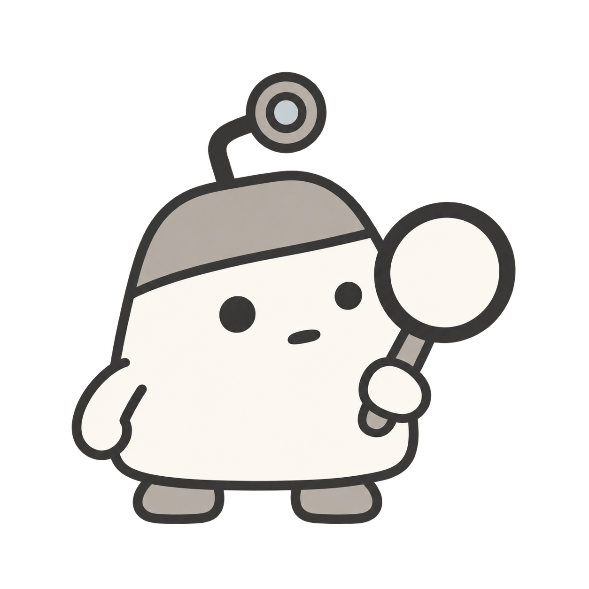

MVTec AD
15
類工業產品
訓練只有
3,629
張正常品（可再分出驗證集）
測試
1,725
張混有正常與瑕疵品
AUROC看模型能不能把瑕疵排在正常品前面；可用在整張圖，也可用在每個像素。
PRO每個瑕疵區域被標中的比例，再取平均；看定位準不準。

認識工業異常檢測標準基準 MVTec AD 的資料分工，並理解影像級與像素級（AUROC 與 PRO）基本評估方式。
掌握視覺異常檢測的兩條基本技術路線——「重建正常外觀」與「比對正常特徵」的核心直覺與各自難題。